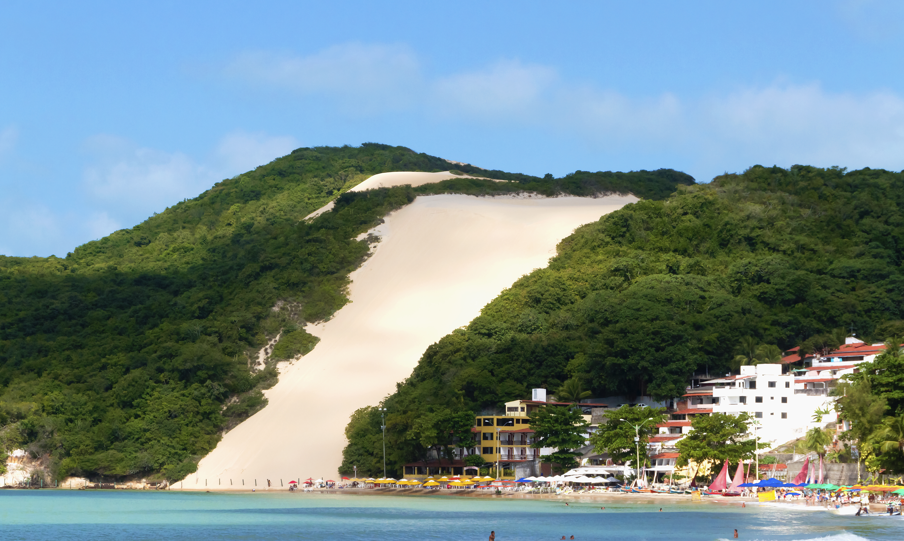

Banho de mar
Aproveitar a praia, especialmente nos trechos e horários em que o mar estiver mais tranquilo.

Praia urbana, Morro do Careca, gastronomia e uma das orlas mais conhecidas de Natal.
Ponta Negra fica na Zona Sul de Natal e reúne praia urbana, hotéis, restaurantes, bares, comércio turístico e uma das paisagens mais famosas do Rio Grande do Norte. O bairro recebe famílias, casais, jovens e visitantes que querem ficar perto da praia sem abrir mão de serviços. Seu cartão-postal mais conhecido é o Morro do Careca, a grande duna no extremo sul da orla.
Aproveitar a praia, especialmente nos trechos e horários em que o mar estiver mais tranquilo.
Circular pela orla, caminhar no fim da tarde e observar a movimentação da Avenida Erivan França.
Contemplar e fotografar o principal cartão-postal de Natal a partir da faixa de areia.
Praticar SUP em áreas de mar mais calmo, principalmente perto do Morro do Careca.
Ver o sol nascer no mar, uma experiência clássica para quem acorda cedo em Ponta Negra.
Explorar restaurantes, bares, quiosques, música ao vivo e polos noturnos do bairro.
Conhecer feiras e centros de compras com lembranças, rendas, castanhas e produtos regionais.
Usar Ponta Negra como base para passeios pela Via Costeira, Parque das Dunas e litoral sul.
A Praia de Ponta Negra tem cerca de 4 km de extensão e é margeada em boa parte pelo calçadão. No extremo sul, próximo ao Morro do Careca, fica o trecho mais icônico e movimentado, com maior fluxo de turistas, barracas e águas que costumam ser mais calmas. O trecho central e norte, em direção à Via Costeira, pode ter mar um pouco mais agitado e costuma atrair caminhadas mais longas.
A faixa de areia, o movimento e o banho variam conforme maré, clima e trecho da praia. Com a nova faixa de areia, o visitante encontra mais espaço para permanecer na praia, caminhar e usar os serviços da orla.
📍 Localização: Praia de Ponta Negra
📍 Abrir no Google MapsAs condições do mar em Ponta Negra podem mudar conforme a maré, os ventos e o clima. Na maré baixa, podem aparecer áreas mais rasas; na maré alta, as ondas podem ganhar força em alguns trechos. Crianças e pessoas que não sabem nadar devem redobrar a atenção.
A balneabilidade não é uma condição permanente. Chuvas fortes podem alterar temporariamente a qualidade da água em pontos da praia. Antes do banho, consulte informações atualizadas.
Recomendação: verifique o boletim de balneabilidade do Programa Água Azul / IDEMA-RN e respeite a sinalização do Corpo de Bombeiros na areia.
O Morro do Careca é uma duna com vegetação nativa que ultrapassa 100 metros de altura. O nome popular vem da faixa de areia clara no centro da vegetação, que lembra uma "careca". A imagem da duna marca o extremo sul de Ponta Negra e é um dos símbolos mais conhecidos de Natal.
No passado, visitantes subiam a duna e desciam de esquibunda, mas essa prática causou erosão e ameaçou a preservação do monumento natural. Hoje, a área é protegida e cercada.
É proibido subir no Morro do Careca. O visitante deve contemplar e fotografar a duna a partir da praia, sem ultrapassar cercas ou acessar a área protegida.
📍 Localização: Morro do Careca
📍 Abrir no Google MapsDurante anos, o avanço do mar provocou erosão na orla, danificando acessos, estruturas urbanas e reduzindo a faixa de areia em alguns trechos. A obra de engorda ampliou a praia com areia dragada do fundo do mar, criando uma faixa mais larga para banhistas e ajudando a proteger o calçadão.
Turistas que conheciam fotografias antigas podem encontrar uma Ponta Negra visualmente diferente. A areia mais ampla melhora o uso da praia, mas obras complementares de reurbanização, drenagem e ajustes no calçadão podem ocorrer em determinados trechos.
O calçadão acompanha a orla e se relaciona diretamente com a Avenida Erivan França, onde ficam quiosques, bares, restaurantes e pontos de acesso à praia. É uma área muito usada para caminhadas, corridas leves, passeios no fim da tarde e circulação entre os serviços turísticos.
Acessos, rampas e escadarias vêm passando por mudanças ligadas à reurbanização. Por isso, a condição de alguns pontos pode mudar com o tempo, principalmente durante obras ou ajustes na infraestrutura.
Na beira-mar, o visitante encontra quiosques, bares informais, música ao vivo e restaurantes com pratos regionais, frutos do mar, camarão, peixe, macaxeira e ginga com tapioca.
Na parte alta do bairro, aparecem restaurantes variados, pizzarias, hamburguerias, culinária internacional, food parks, bares e opções noturnas. O deslocamento a partir da praia pode envolver ladeiras.
Espaço de compras para lembranças, artesanato e produtos regionais na Avenida Engenheiro Roberto Freire.
📍 Localização: Vilarte - Vila do Artesanato
📍 Abrir no Google MapsCentro de compras com artesanato, lembranças e produtos típicos, também na Avenida Engenheiro Roberto Freire.
📍 Localização: Shopping do Artesanato Potiguar
📍 Abrir no Google MapsFeira próxima à Avenida Engenheiro Roberto Freire, citada como opção para comprar lembranças e circular no fim do dia.
📍 Localização: Feirinha de Artesanato de Ponta Negra
📍 Abrir no Google MapsPonta Negra continua sendo o foco da página, mas o bairro também funciona como base para passeios rápidos em Natal e no litoral sul.
Via que liga Ponta Negra a outras áreas de Natal, com resorts e praias de visual bonito, mas que podem ter mar mais agitado.
📍 Localização: Via Costeira
📍 Abrir no Google MapsÁrea de conservação urbana próxima de Ponta Negra, citada como complemento para quem quer contato com natureza dentro de Natal.
📍 Localização: Parque das Dunas
📍 Abrir no Google MapsAtração do litoral sul, a cerca de 15 km pela Rota do Sol, indicada no guia como passeio de meio dia a partir de Ponta Negra.
📍 Localização: Cajueiro de Pirangi
📍 Abrir no Google MapsFica mais perto da areia, do calçadão e dos quiosques. É a área mais prática para quem quer evitar ladeiras, especialmente idosos, crianças e pessoas com mobilidade reduzida.
Concentra restaurantes, feiras, shoppings e vistas mais altas. Pode exigir carro, aplicativo ou disposição para subir e descer ladeiras até a praia.
Período mais seco, com mais chance de sol, brisa constante e mar mais claro.
Dezembro e janeiro têm mais movimento, praias cheias e maior procura por hospedagem.
Período mais chuvoso, com possibilidade de pancadas intercaladas com momentos de sol.
O Aeroporto Internacional de Natal fica em São Gonçalo do Amarante, a cerca de 46 km de Ponta Negra. A viagem costuma levar perto de 1 hora, dependendo do trânsito.
📍 Localização: Aeroporto Internacional de Natal
📍 Abrir no Google MapsTáxis, aplicativos e transfers são as formas mais usadas por quem chega pelo aeroporto. Transfers e vans receptivas podem ser agendados com antecedência ou contratados no desembarque.
O carro oferece liberdade para conhecer outros pontos de Natal e do litoral, mas estacionar perto do calçadão pode ser difícil em períodos movimentados.
No calçadão, muita coisa pode ser feita a pé. A ligação entre a praia e a parte alta do bairro, porém, envolve ladeiras fortes. Para ir a restaurantes na Avenida Roberto Freire, voltar à noite ou visitar atrações próximas, carro, táxi ou aplicativo podem ajudar.
Em alta temporada, eventos e feriados, o trânsito e o estacionamento perto da orla podem ficar mais difíceis. Evite contar com valores fixos de transporte: eles variam conforme horário, demanda e trajeto.
Não deixe celulares, bolsas e documentos desacompanhados na areia ou nas cadeiras.
Prefira áreas movimentadas e iluminadas; evite trechos de areia isolados durante a noite.
Use protetor, chapéu e óculos de sol, porque a brisa pode disfarçar o calor.
Beba água com frequência, especialmente em caminhadas longas pela orla.
Observe bandeiras, maré e orientação dos bombeiros antes de entrar na água.
A reurbanização ligada à nova faixa de areia inclui adequações de rampas e acessos entre calçadão e praia. Ainda assim, nem todos os pontos devem ser considerados plenamente acessíveis, e algumas rampas podem estar em adaptação.
A parte alta de Ponta Negra tem ladeiras e calçadas estreitas em alguns trechos. Para idosos, crianças pequenas e pessoas com mobilidade reduzida, hospedar-se próximo ao calçadão tende a facilitar a viagem.
Chegue cedo, aproveite o mar na área sul próxima ao Morro do Careca, tire fotos da duna, caminhe pelo calçadão e faça uma pausa em um quiosque para almoço ou água de coco.
Faça a programação da manhã com calma, reserve a tarde para descanso ou stand up paddle, caminhe no fim do dia e visite feiras de artesanato antes do jantar na beira-mar ou no Alto de Ponta Negra.
Use o segundo dia para conhecer atrações próximas, como o litoral sul e o Cajueiro de Pirangi, retornando à tarde para aproveitar a noite do bairro.
Podem aproveitar a faixa de areia ampla, preferindo mar mais calmo e atenção redobrada ao sol.
Encontram restaurantes, caminhada na orla e hospedagens em ruas mais tranquilas.
Devem priorizar hospedagem perto do calçadão para evitar ladeiras fortes.
A região plana próxima à praia tende a ser mais prática, mas rampas e acessos podem variar.
O bairro concentra bares, música ao vivo, forró, rock e restaurantes movimentados.
Não. A subida é proibida para preservar a duna. A área é cercada e deve ser observada a partir da praia.
A faixa de areia ficou mais larga, oferecendo mais espaço aos banhistas e ajudando a proteger a orla.
Não exatamente. O Aeroporto Internacional de Natal fica a cerca de 46 km, em São Gonçalo do Amarante.
Na orla, muita coisa pode ser feita a pé. Carro ou aplicativo ajudam para ladeiras, saídas à noite e passeios próximos.
A condição pode variar. Consulte o boletim de balneabilidade atualizado do Programa Água Azul / IDEMA-RN antes do banho.